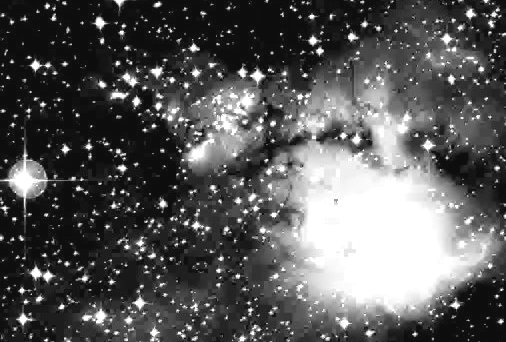

17.5: at 82x with OIII filter appears as a large, bright, circular nebulosity about 10' diameter. A mag 7.8 star is involved N of center and several fainter stars are involved. Brightest along the S side in a strip oriented NW-SE. A group of brighter stars is NE (Haffner 18). A separate larger (~15') but fainter section is 10'-15' NE amd appears elongated.
8: fairly bright, moderately large, roughly circular. A mag 8 star is N of center. This is a prominent nebulosity even in this aperture. - Steve Gottlieb